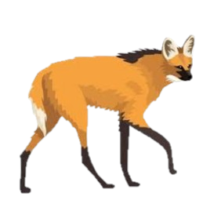

Numa encantadora manhã de outono, no coração do cerrado paulista, um astuto lobo guará passeava.
Até que então, ele avista um homem de cabelos grisalhos, jogando gasolina numa mata com a intenção de incendia-la,
para que ela se regenerasse mais forte.

- O que pensa que está fazendo?! - diz o lobo.
"Saia daqui! Animal enxerido! " - respondeu o velho.
"Não pensas nas consequencias de seus atos? Não vês que isso se espalhará por uma grande parte da floresta?"
- Ponderou Guará.
"Eu faço o que eu quiser! Essa terra é minha!"- respondeu o homem, irredutível.
"Sua? Tens certeza? Você apenas tem o direito de usa-la! Se for assim, ela deveria ser dos indigenas e dos animais, que aqui estavam antes de você grila-la!"
O homem começa a jogar pedras no animal, que foge.
Ele apagou o fogo após um tempo de queima, e foi embora satisfeito.